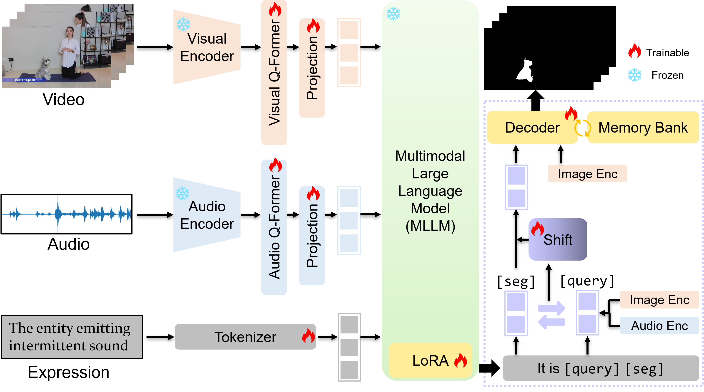
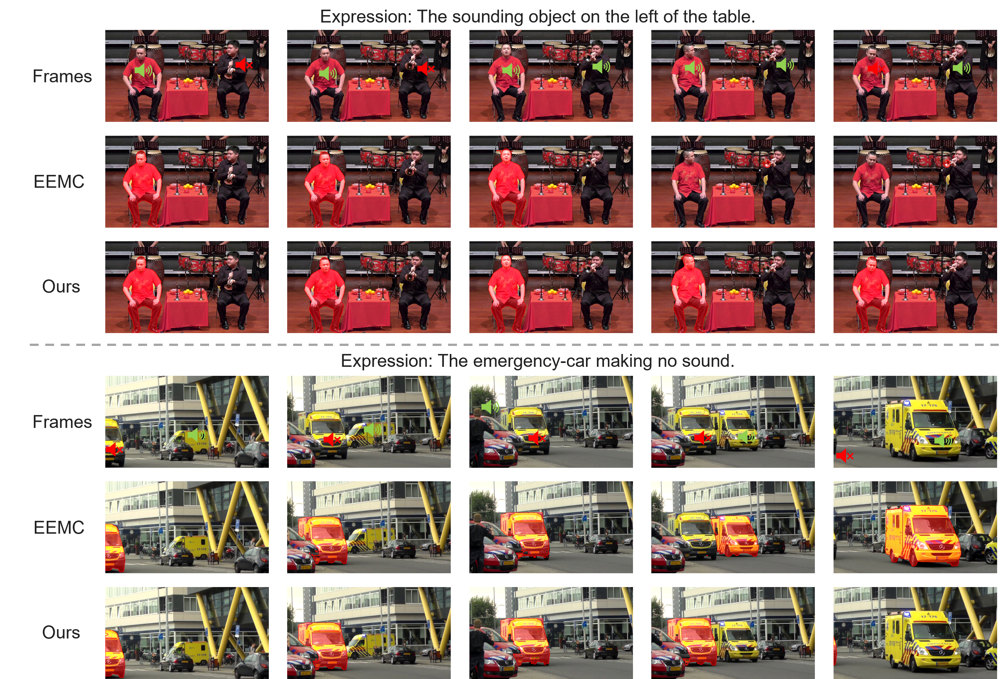
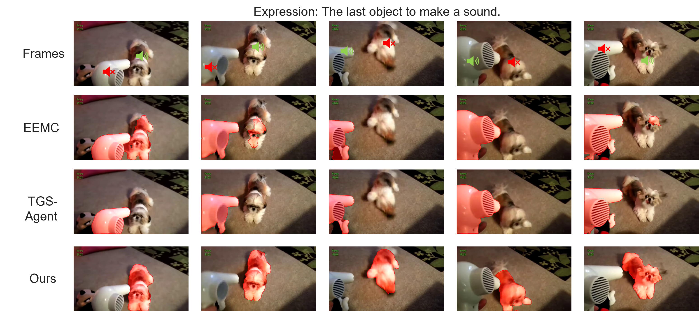
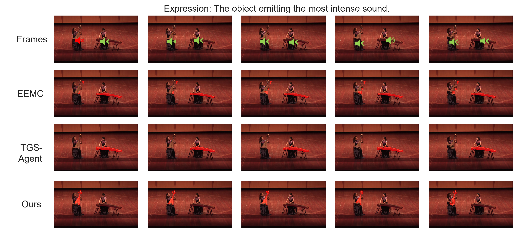
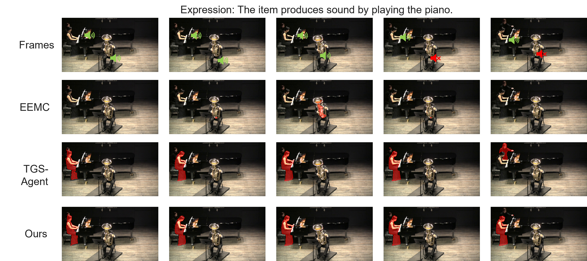
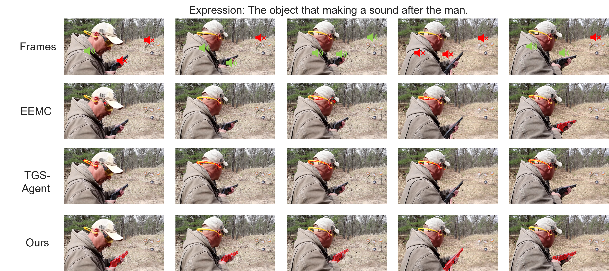

Abstract
Referring Audio–Visual Segmentation (Ref-AVS) is an emergent multimodal task requiring the precise identification and segmentation of a specific object based on a natural language expression grounded in both visual and auditory cues. Unlike traditional AVS, which segments generic sound sources, or referring video object segmentation (Ref-VOS), which relies solely on visual–textual grounding, Ref-AVS necessitates fine-grained tri-modal interaction across vision, audio, and language. However, existing methods often fail to maintain consistency when subjected to target shift, a phenomenon where the model erroneously transfers its focus between objects due to transient occlusions, acoustic fading, or identity ambiguities. To address this, we propose a novel Shift-Aware Identity-guided Latent (SAIL) refinement framework. It introduces a dual-token strategy that decouples frame-level dynamics from a global semantic anchor to explicitly model target-shift cues. We design a shift-aware refinement module that rectifies drift by aligning tokens with domain-specific evidence. Finally, we leverage a decoder that integrates the refined embeddings with a continuous memory update to maintain spatio-temporal coherence and identity consistency throughout the video sequence. Extensive experiments conducted on two Ref-AVS benchmarks demonstrate the effectiveness of our proposed method, significantly outperforming existing AVS, Ref-VOS, and Ref-AVS approaches.
Method
We propose SAIL, a novel end-to-end MLLM-based framework that leverages anchor identity and shift refinement for the Ref-AVS task. Specifically, we introduce a temporal [seg] token to capture frame-specific focus and a global [query] token to establish a persistent semantic anchor for the referred object. By explicitly modeling the variance across visual and auditory modalities, our framework quantifies potential target drift through a dedicated shift-estimation mechanism. Finally, these shift-refined embeddings are integrated with a weighted global anchor and then fed into a mask decoder. By synchronizing these refined features with a continuous memory bank update, SAIL effectively mitigates target shift and ensures spatio-temporal identity consistency for mask prediction.

Overview of the proposed SAIL framework. Our MLLM with LoRA reasons over the unified tri-modal tokens, generating frame-level [seg] tokens for local dynamics and a global [query] token as a semantic anchor. The shift-aware refinement module estimates and rectifies the latent shift by comparing the domain-specific evidence with the anchor's semantics. The mask decoder utilizes the refined embeddings and a memory mechanism to generate consistent mask predictions for the entire video sequence. For brevity, projection units before the decoder are omitted.
Experimental Results
Qualitative Results

Qualitative results of SAIL and baseline from Ref-AVSBench.
Quantitative Results

Comparison with existing methods on Ref-AVSBench.

Additional qualitative results.

Additional qualitative results.

Additional qualitative results.

Additional qualitative results.
BibTeX
@article{li2026shift,
title={Shift-Aware Identity-Guided Latent Refinement for Referring Audio--Visual Segmentation},
author={Li, Kun and Brandt, Sami Sebastian and Yang, Michael Ying},
journal={arXiv preprint arXiv:2610.12783},
year={2026}
}